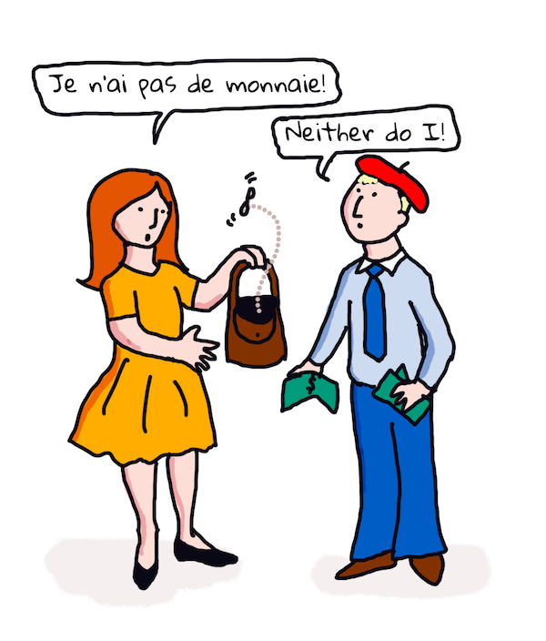

Translation and sentiment analysis with ML⚓︎
In the previous lessons you learned how to build a basic bot using TextBlob, a library that embeds ML behind-the-scenes to perform basic NLP tasks such as noun phrase extraction. Another important challenge in computational linguistics is accurate translation of a sentence from one spoken or written language to another.
Pre-lecture quiz⚓︎
Translation is a very hard problem compounded by the fact that there are thousands of languages and each can have very different grammar rules. One approach is to convert the formal grammar rules for one language, such as English, into a non-language dependent structure, and then translate it by converting back to another language. This approach means that you would take the following steps:
- Identification. Identify or tag the words in input language into nouns, verbs etc.
- Create translation. Produce a direct translation of each word in the target language format.
Example sentence, English to Irish⚓︎
In 'English', the sentence I feel happy is three words in the order:
- subject (I)
- verb (feel)
- adjective (happy)
However, in the 'Irish' language, the same sentence has a very different grammatical structure - emotions like "happy" or "sad" are expressed as being upon you.
The English phrase I feel happy in Irish would be Tá athas orm. A literal translation would be Happy is upon me.
An Irish speaker translating to English would say I feel happy, not Happy is upon me, because they understand the meaning of the sentence, even if the words and sentence structure are different.
The formal order for the sentence in Irish are:
- verb (Tá or is)
- adjective (athas, or happy)
- subject (orm, or upon me)
Translation⚓︎
A naive translation program might translate words only, ignoring the sentence structure.
✅ If you've learned a second (or third or more) language as an adult, you might have started by thinking in your native language, translating a concept word by word in your head to the second language, and then speaking out your translation. This is similar to what naive translation computer programs are doing. It's important to get past this phase to attain fluency!
Naive translation leads to bad (and sometimes hilarious) mistranslations: I feel happy translates literally to Mise bhraitheann athas in Irish. That means (literally) me feel happy and is not a valid Irish sentence. Even though English and Irish are languages spoken on two closely neighboring islands, they are very different languages with different grammar structures.
You can watch some videos about Irish linguistic traditions such as this one
Machine learning approaches⚓︎
So far, you've learned about the formal rules approach to natural language processing. Another approach is to ignore the meaning of the words, and instead use machine learning to detect patterns. This can work in translation if you have lots of text (a corpus) or texts (corpora) in both the origin and target languages.
For instance, consider the case of Pride and Prejudice, a well-known English novel written by Jane Austen in 1813. If you consult the book in English and a human translation of the book in French, you could detect phrases in one that are idiomatically translated into the other. You'll do that in a minute.
For instance, when an English phrase such as I have no money is translated literally to French, it might become Je n'ai pas de monnaie. "Monnaie" is a tricky french 'false cognate', as 'money' and 'monnaie' are not synonymous. A better translation that a human might make would be Je n'ai pas d'argent, because it better conveys the meaning that you have no money (rather than 'loose change' which is the meaning of 'monnaie').

Image by Jen Looper
If an ML model has enough human translations to build a model on, it can improve the accuracy of translations by identifying common patterns in texts that have been previously translated by expert human speakers of both languages.
Exercise - translation⚓︎
You can use TextBlob to translate sentences. Try the famous first line of Pride and Prejudice:
from textblob import TextBlob
blob = TextBlob(
"It is a truth universally acknowledged, that a single man in possession of a good fortune, must be in want of a wife!"
)
print(blob.translate(to="fr"))
TextBlob does a pretty good job at the translation: "C'est une vérité universellement reconnue, qu'un homme célibataire en possession d'une bonne fortune doit avoir besoin d'une femme!".
It can be argued that TextBlob's translation is far more exact, in fact, than the 1932 French translation of the book by V. Leconte and Ch. Pressoir:
"C'est une vérité universelle qu'un célibataire pourvu d'une belle fortune doit avoir envie de se marier, et, si peu que l'on sache de son sentiment à cet egard, lorsqu'il arrive dans une nouvelle résidence, cette idée est si bien fixée dans l'esprit de ses voisins qu'ils le considèrent sur-le-champ comme la propriété légitime de l'une ou l'autre de leurs filles."
In this case, the translation informed by ML does a better job than the human translator who is unnecessarily putting words in the original author's mouth for 'clarity'.
What's going on here? and why is TextBlob so good at translation? Well, behind the scenes, it's using Google translate, a sophisticated AI able to parse millions of phrases to predict the best strings for the task at hand. There's nothing manual going on here and you need an internet connection to use
blob.translate.
✅ Try some more sentences. Which is better, ML or human translation? In which cases?
Sentiment analysis⚓︎
Another area where machine learning can work very well is sentiment analysis. A non-ML approach to sentiment is to identify words and phrases which are 'positive' and 'negative'. Then, given a new piece of text, calculate the total value of the positive, negative and neutral words to identify the overall sentiment.
This approach is easily tricked as you may have seen in the Marvin task - the sentence Great, that was a wonderful waste of time, I'm glad we are lost on this dark road is a sarcastic, negative sentiment sentence, but the simple algorithm detects 'great', 'wonderful', 'glad' as positive and 'waste', 'lost' and 'dark' as negative. The overall sentiment is swayed by these conflicting words.
✅ Stop a second and think about how we convey sarcasm as human speakers. Tone inflection plays a large role. Try to say the phrase "Well, that film was awesome" in different ways to discover how your voice conveys meaning.
ML approaches⚓︎
The ML approach would be to manually gather negative and positive bodies of text - tweets, or movie reviews, or anything where the human has given a score and a written opinion. Then NLP techniques can be applied to opinions and scores, so that patterns emerge (e.g., positive movie reviews tend to have the phrase 'Oscar worthy' more than negative movie reviews, or positive restaurant reviews say 'gourmet' much more than 'disgusting').
⚖️ Example: If you worked in a politician's office and there was some new law being debated, constituents might write to the office with emails supporting or emails against the particular new law. Let's say you are tasked with reading the emails and sorting them in 2 piles, for and against. If there were a lot of emails, you might be overwhelmed attempting to read them all. Wouldn't it be nice if a bot could read them all for you, understand them and tell you in which pile each email belonged?
One way to achieve that is to use Machine Learning. You would train the model with a portion of the against emails and a portion of the for emails. The model would tend to associate phrases and words with the against side and the for side, but it would not understand any of the content, only that certain words and patterns were more likely to appear in an against or a for email. You could test it with some emails that you had not used to train the model, and see if it came to the same conclusion as you did. Then, once you were happy with the accuracy of the model, you could process future emails without having to read each one.
✅ Does this process sound like processes you have used in previous lessons?
Exercise - sentimental sentences⚓︎
Sentiment is measured in with a polarity of -1 to 1, meaning -1 is the most negative sentiment, and 1 is the most positive. Sentiment is also measured with an 0 - 1 score for objectivity (0) and subjectivity (1).
Take another look at Jane Austen's Pride and Prejudice. The text is available here at Project Gutenberg. The sample below shows a short program which analyses the sentiment of first and last sentences from the book and display its sentiment polarity and subjectivity/objectivity score.
You should use the TextBlob library (described above) to determine sentiment (you do not have to write your own sentiment calculator) in the following task.
from textblob import TextBlob
quote1 = """It is a truth universally acknowledged, that a single man in possession of a good fortune, must be in want of a wife."""
quote2 = """Darcy, as well as Elizabeth, really loved them; and they were both ever sensible of the warmest gratitude towards the persons who, by bringing her into Derbyshire, had been the means of uniting them."""
sentiment1 = TextBlob(quote1).sentiment
sentiment2 = TextBlob(quote2).sentiment
print(quote1 + " has a sentiment of " + str(sentiment1))
print(quote2 + " has a sentiment of " + str(sentiment2))
You see the following output:
It is a truth universally acknowledged, that a single man in possession of a good fortune, must be in want # of a wife. has a sentiment of Sentiment(polarity=0.20952380952380953, subjectivity=0.27142857142857146)
Darcy, as well as Elizabeth, really loved them; and they were
both ever sensible of the warmest gratitude towards the persons
who, by bringing her into Derbyshire, had been the means of
uniting them. has a sentiment of Sentiment(polarity=0.7, subjectivity=0.8)
Challenge - check sentiment polarity⚓︎
Your task is to determine, using sentiment polarity, if Pride and Prejudice has more absolutely positive sentences than absolutely negative ones. For this task, you may assume that a polarity score of 1 or -1 is absolutely positive or negative respectively.
Steps:
- Download a copy of Pride and Prejudice from Project Gutenberg as a .txt file. Remove the metadata at the start and end of the file, leaving only the original text
- Open the file in Python and extract the contents as a string
- Create a TextBlob using the book string
- Analyse each sentence in the book in a loop
- If the polarity is 1 or -1 store the sentence in an array or list of positive or negative messages
- At the end, print out all the positive sentences and negative sentences (separately) and the number of each.
Here is a sample solution.
✅ Knowledge Check
- The sentiment is based on words used in the sentence, but does the code understand the words?
- Do you think the sentiment polarity is accurate, or in other words, do you agree with the scores?
- In particular, do you agree or disagree with the absolute positive polarity of the following sentences?
- “What an excellent father you have, girls!” said she, when the door was shut.
- “Your examination of Mr. Darcy is over, I presume,” said Miss Bingley; “and pray what is the result?” “I am perfectly convinced by it that Mr. Darcy has no defect.
- How wonderfully these sort of things occur!
- I have the greatest dislike in the world to that sort of thing.
- Charlotte is an excellent manager, I dare say.
- “This is delightful indeed!
- I am so happy!
- Your idea of the ponies is delightful.
- The next 3 sentences were scored with an absolute positive sentiment, but on close reading, they are not positive sentences. Why did the sentiment analysis think they were positive sentences?
- Happy shall I be, when his stay at Netherfield is over!” “I wish I could say anything to comfort you,” replied Elizabeth; “but it is wholly out of my power.
- If I could but see you as happy!
- Our distress, my dear Lizzy, is very great.
- Do you agree or disagree with the absolute negative polarity of the following sentences?
- Everybody is disgusted with his pride.
- “I should like to know how he behaves among strangers.” “You shall hear then—but prepare yourself for something very dreadful.
- The pause was to Elizabeth’s feelings dreadful.
- It would be dreadful!
✅ Any aficionado of Jane Austen will understand that she often uses her books to critique the more ridiculous aspects of English Regency society. Elizabeth Bennett, the main character in Pride and Prejudice, is a keen social observer (like the author) and her language is often heavily nuanced. Even Mr. Darcy (the love interest in the story) notes Elizabeth's playful and teasing use of language: "I have had the pleasure of your acquaintance long enough to know that you find great enjoyment in occasionally professing opinions which in fact are not your own."
🚀Challenge⚓︎
Can you make Marvin even better by extracting other features from the user input?
Post-lecture quiz⚓︎
Review & Self Study⚓︎
There are many ways to extract sentiment from text. Think of the business applications that might make use of this technique. Think about how it can go awry. Read more about sophisticated enterprise-ready systems that analyze sentiment such as Azure Text Analysis. Test some of the Pride and Prejudice sentences above and see if it can detect nuance.
Assignment⚓︎
创建日期: November 22, 2023